Ruchir Kavulli
Electrical engineering + physics, USC. CTO of Mi Vivo.
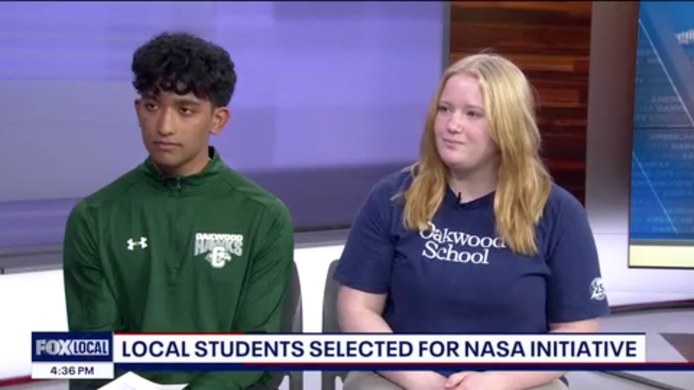
I started a satellite program in high school and NASA selected it for launch. I design flight computers, PCBs, firmware and FPGA logic. Now I'm building an intelligence that has never seen a human.
Alien Intelligence
This is what I'm dedicated to.
Every frontier model is pretrained on human data, so its outputs cluster around a human prior. More compute doesn't fix that. I think the next jump in science comes from a system with no human prior at all.
So I'm building one. Its entire world is a single graphite chip under a scanning tunneling microscope I'm building myself. It senses electrons at the atomic scale and acts through the tip voltage, heat and light. It starts from zero, learns by curiosity, invents and names its own skills, and gets its reward from the real world instead of from us.
NyanSat
A 2U CubeSat selected by NASA's CubeSat Launch Initiative, with a $300k launch grant. Oakwood was the only K-12 school picked, alongside eight universities and a NASA flight center. I initiated the project, led the electrical side, designed the flight computer (a 4-layer board derived from PyCubed) and wrote its firmware. Presented at the Cal Poly CubeSat Developers Workshop. The boards are open source.
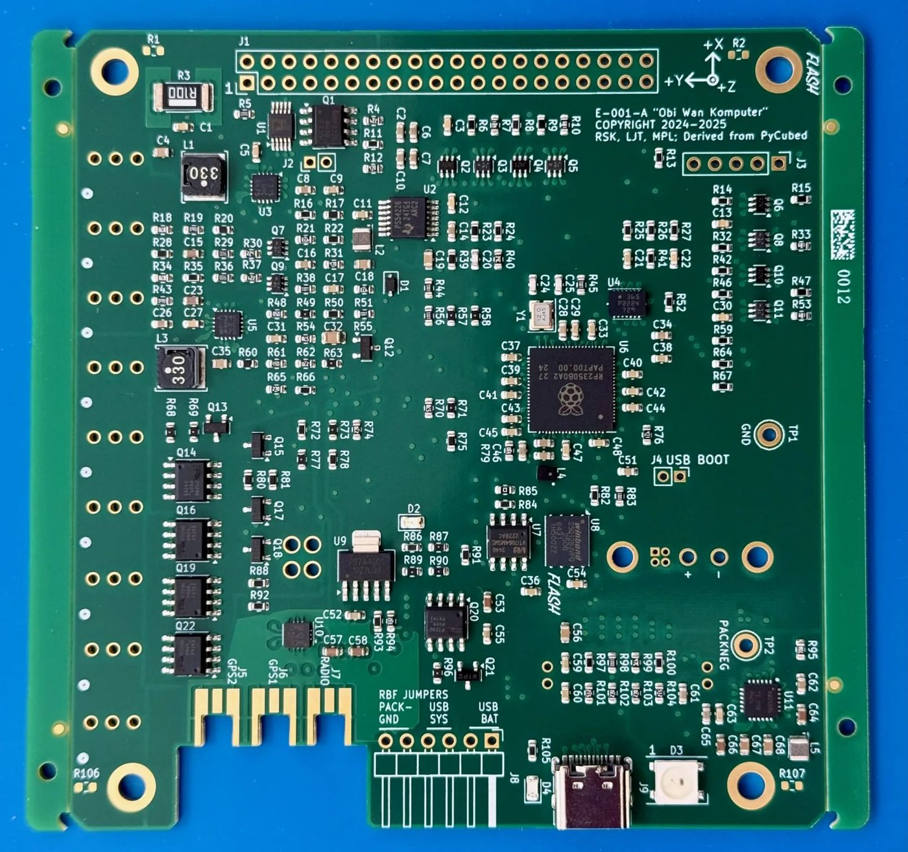
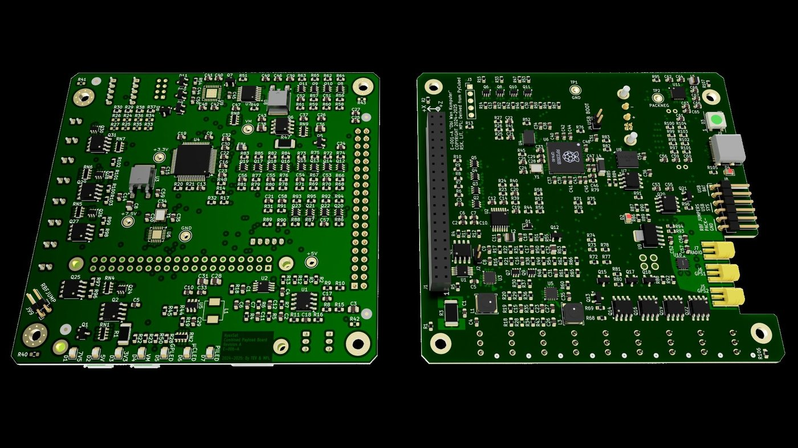
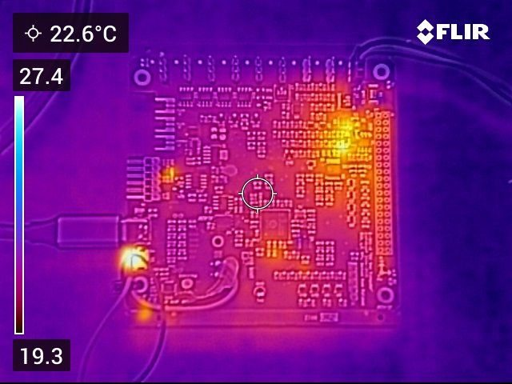
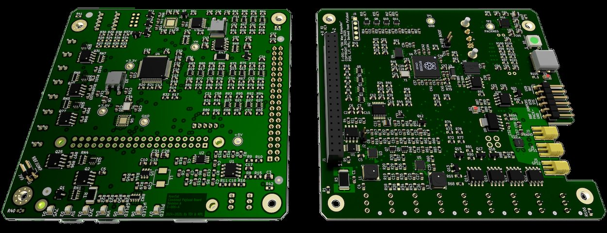
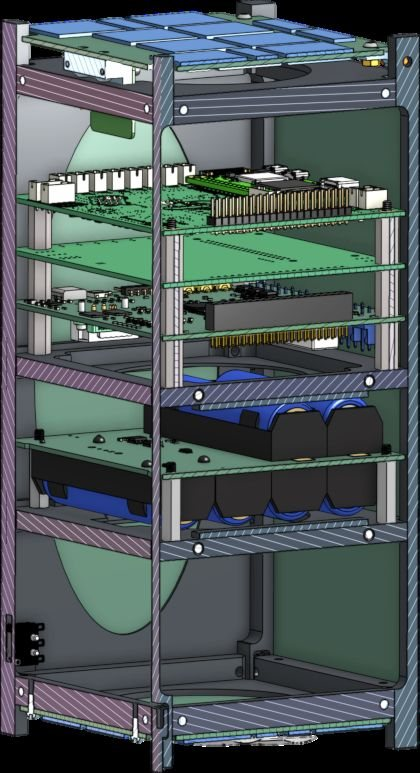
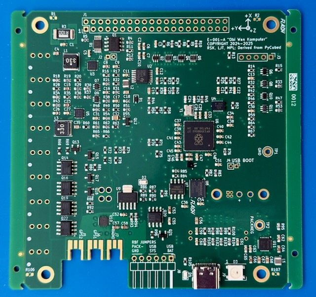
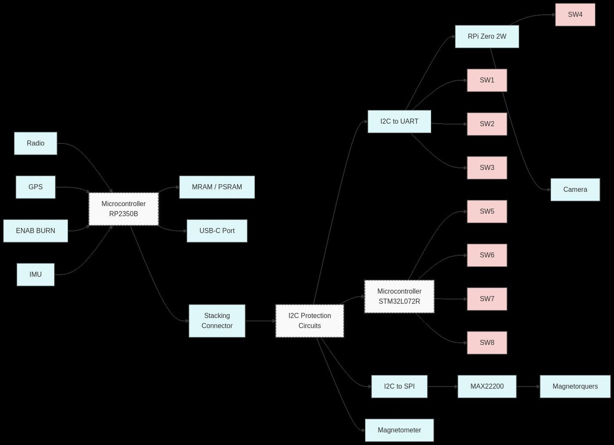
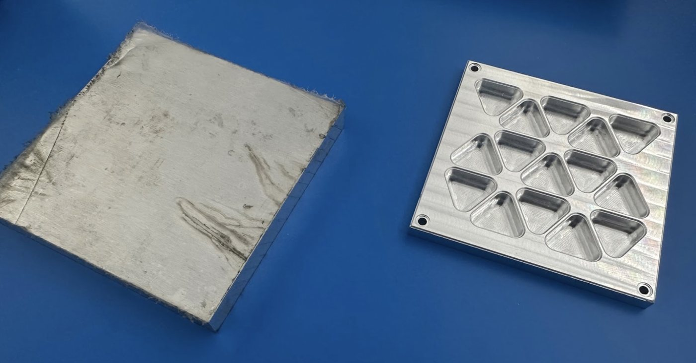
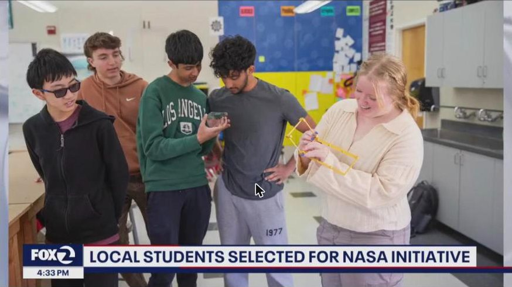
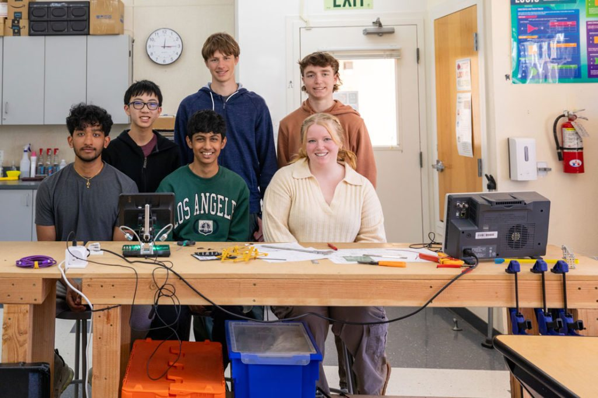
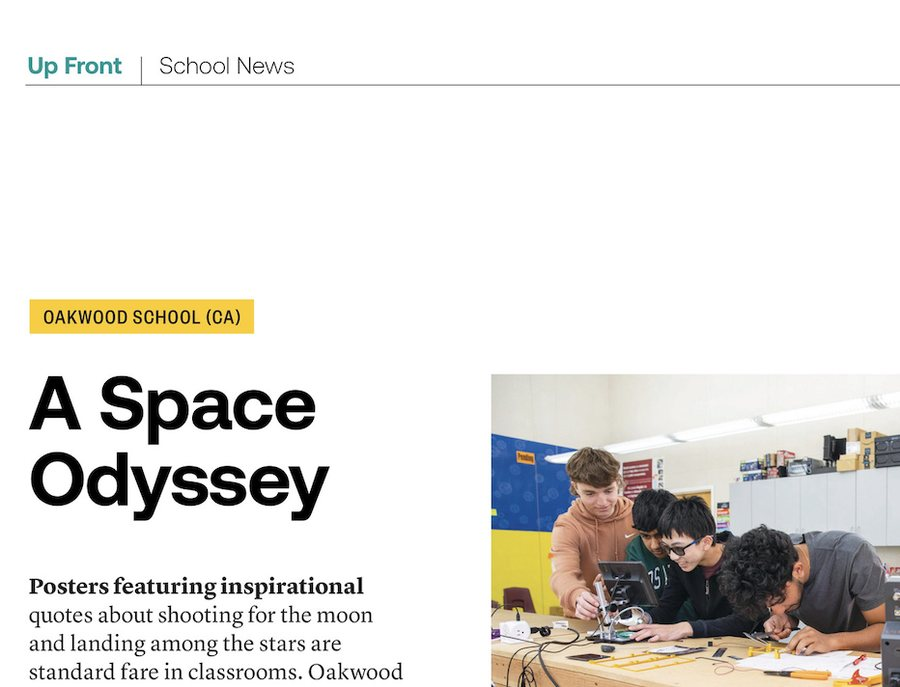
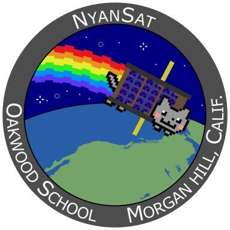
Mi Vivo
I co-founded Mi Vivo and I'm its CTO. We build complete radiotherapy centers inside shipping containers, pre-assembled and plug-and-play, for countries that don't have enough of them. Our oncology software already runs in two hospitals in Honduras. It's a for-profit company with a charity's mission, and I'm committed to it.
First-author perspective on containerized radiotherapy, accepted at Frontiers in Oncology.
Also
- Ambient Scientific, ultra low-power AI chips. FPGA, Verilog, test rigs2022–2024
- Avionics board, USC Rocket Propulsion Lab2024
- .406 Ventures, Venture Fellow2025–
- Entrepreneurs First, Fellow2025–2026
- CoDream, first-cohort resident2025
- Advertise to Yourself, and other tools I build for myself